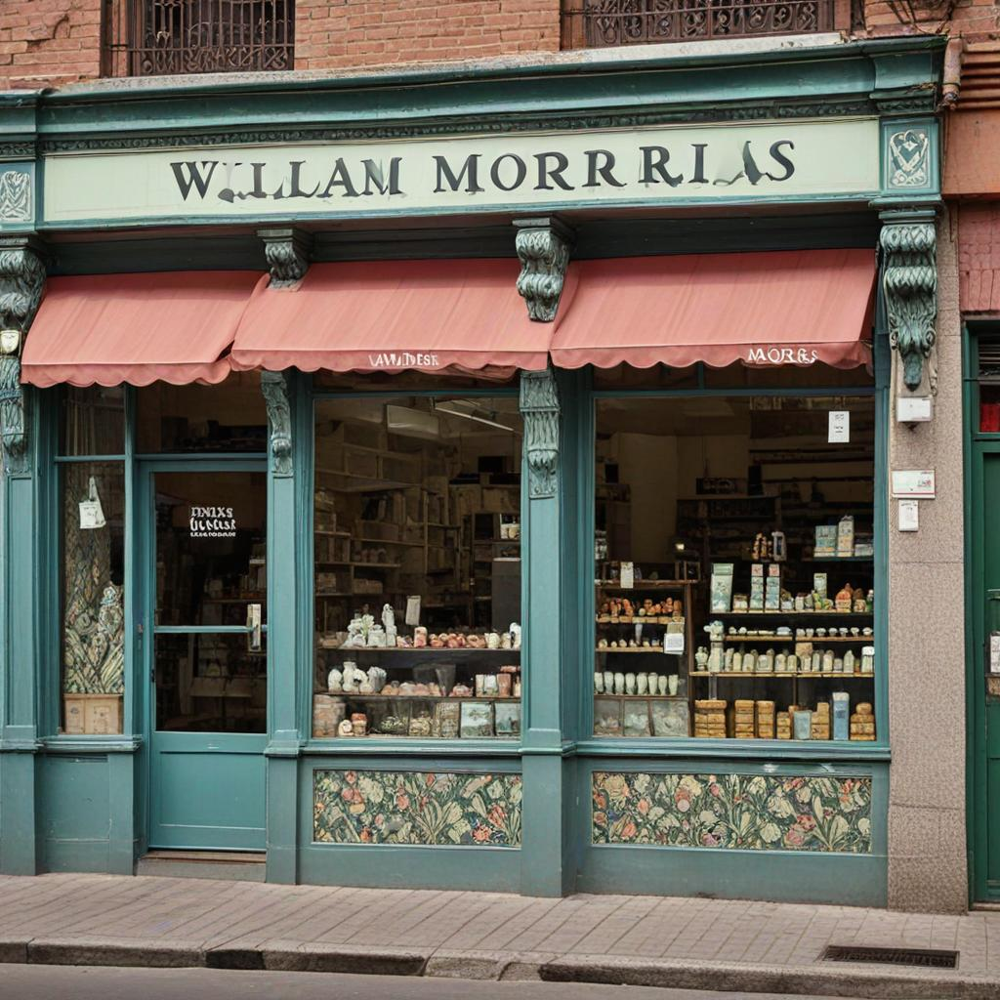

La historia de la Heladería

En el corazón de William Morris, un barrio vibrante de la Provincia de Buenos Aires, se encuentra la encantadora "Heladería Morris", un oasis helado que ha capturado los corazones de los residentes desde su apertura en el año 2020. Manejada con pasión y dedicación por sus propios dueños, esta heladería no solo ha traído un toque fresco y delicioso a la comunidad, sino que también se ha convertido en un punto de reunión querido por muchos. Fundada por Juan y María Rodríguez, dos emprendedores locales con una visión clara de ofrecer helados artesanales de calidad, "Heladería Morris" nació como un sueño que rápidamente se hizo realidad. Con una decoración moderna y acogedora, el ambiente de la heladería invita a los clientes a relajarse y disfrutar de una experiencia única.
Desde su apertura, "Heladería Morris" se ha destacado por su compromiso con la frescura y la autenticidad. Utilizando ingredientes locales siempre que es posible, Juan y María han creado una variedad impresionante de sabores que van desde los clásicos como el dulce de leche y el chocolate hasta opciones innovadoras como maracuyá con jengibre y frutos rojos con menta fresca. Cada helado está preparado con cuidado y maestría, garantizando una explosión de sabor en cada cucharada. La atención al cliente es otro pilar fundamental de la heladería. Juan y María, con su calidez y amabilidad, hacen que cada visita sea memorable. Están siempre dispuestos a compartir historias detrás de los sabores o a recomendar combinaciones que sorprendan y deleiten a los paladares más exigentes. Además de sus helados, "Heladería Morris" ofrece una selección de postres helados y bebidas refrescantes, ideales para acompañar cualquier ocasión. Desde familias que disfrutan de un paseo dominical hasta amigos que se reúnen después del trabajo, la heladería ha creado un espacio donde los momentos felices y los buenos sabores se fusionan perfectamente. En resumen, "Heladería Morris" no es solo un lugar para satisfacer antojos dulces, sino también un símbolo de la pasión y el compromiso de Juan y María con la comunidad de William Morris. Con cada helado que sirven, están construyendo una historia de éxito que continúa deleitando y uniendo a quienes tienen el placer de visitar este encantador establecimiento.